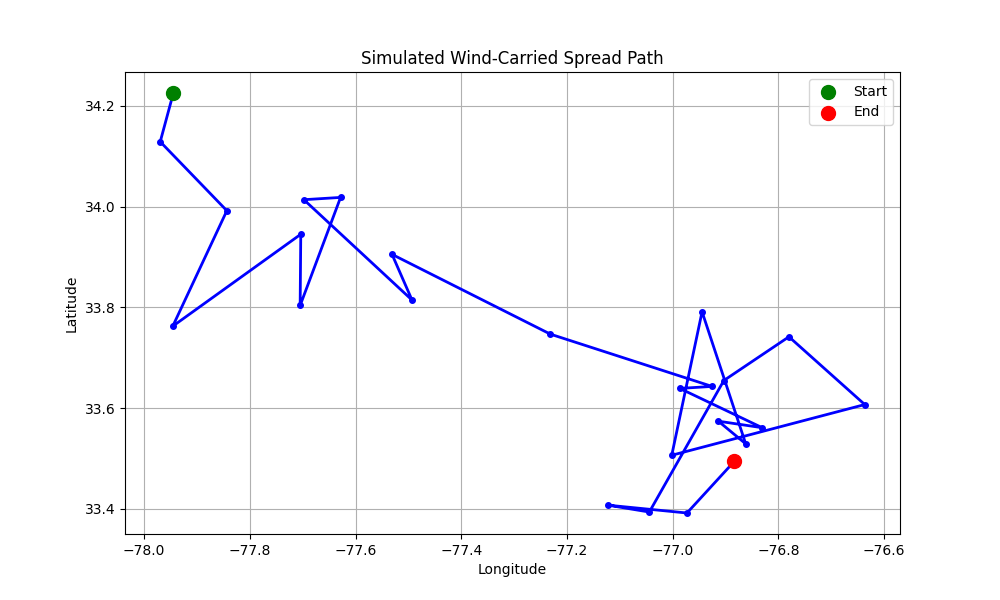

EcoFlight is a Python-based simulation that models the spread of airborne materials like pollen, smoke, and microplastics using wind vector data. This visualization is a static example showing how materials may disperse over a 24-hour period from Wilmington, NC.
